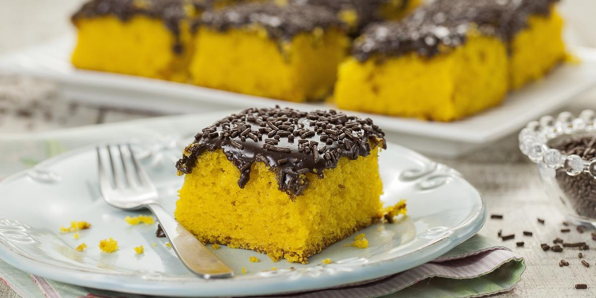

Inicio da página
INGREDIENTES
Massa do Bolo
3 cenouras médias (250g)
4 ovos
meia xícara (chá) de óleo
2 e meia xícaras (chá) de farinha de trigo
2 xícaras (chá) de açúcar
1 colher (sopa) de fermento em pó
Cobertura de Brigadeiro
1 Leite MOÇA® (lata ou caixinha) 395g
1 colher (sopa) de manteiga
meia xícara (chá) de Chocolate em Pó NESTLÉ® DOIS FRADES®
meia xícara (chá) de chocolate granulado
Modo de preparo
Massa do Bolo
Em um liquidificador, bata as cenouras, os ovos e o óleo.
Despeje a mistura em um recipiente e misture o açúcar e a farinha de trigo peneirada com o fermento.
Coloque em uma fôrma retangular (20 x 30 cm) untada, e leve ao forno médio (180°C), preaquecido, por 40 minutos.
Enquanto isso, prepare a cobertura de brigadeiro.
Cobertura de Brigadeiro
Em uma panela coloque o Leite MOÇA, o Chocolate em Pó DOIS FRADES e a manteiga e leve ao fogo baixo, mexendo sempre, até começar a desprender da panela.
Despeje ainda quente sobre o bolo, distribua o chocolate granulado e deixe esfriar.
